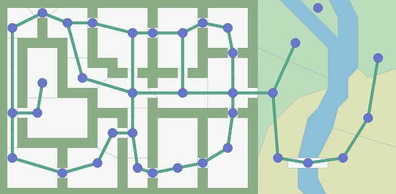
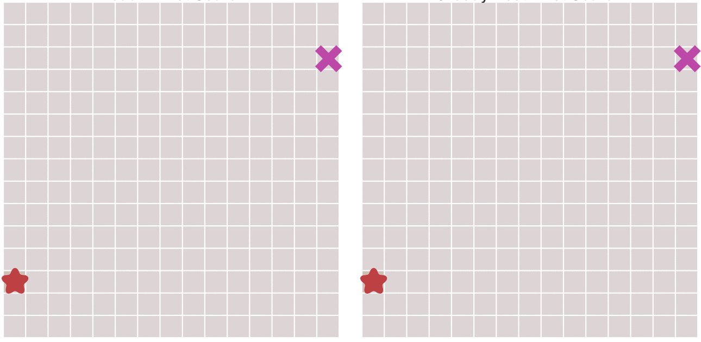

A star
In computer science, A*(pronounced A-Star) is a computer algorithm that is widely used in pathfinding and graph traversal, which is the process of finding a path between multiple points, called "nodes". It enjoys widespread use due to its performance and accuracy. Peter Hart, Nils Nilsson and Bertram Raphael of Stanford Research Institude(now SRI International) first published the algorithm in 1968. It can be seen as an extension of Edsger Dijkstra's 1959 algorithm. A* achieves better performance by using heuristics to guide its search.
Problem¶
In real world, we often want to find a path from one location to another, it may be the shortest one or the most suitable one. Movement for a single object seems easy, pathfinding is complex, but pathfinder let you plan a path before you meet the obstacles, then you can move the short or suitable path. Path planning generally is slow, but gives better results.
Assumption¶
To find the path, we can sue a graph search algorithm, which works when the map is represented as a graph.
Input¶
Graph search algorithms take a graph as input. A graph is a set of locations("node") and the connections("edge") between them, like this:

Pathfinder doesn't see anything else, it only see the graph.
Output¶
The path found by pathfinder is made of graph nodes and edges. It tells you to move from one location to another, but it can't tell you how. You have to decide whether a graph edge you got means walking in a straight line or running along a curved path.
Early Solutions¶
There are lots of algorithms that run on graphs and find the path, the simplest is "Breadth First Search".
Breadth First Search¶
Breadth First Search explores equally in all directions. The key idea for this algorithm is that we keep track of an expanding ring called frontier. On a grid, this process is somtimes called "flood fill", but the same technique works for non-grids.

The main process is:
Loop:
- Pick and remove a
locationfrom thefrontier; - Expand it by looking at its
neighbors, any neighbors we haven't visited yet we add to thefrontier, and also to thevisitedset; - if
frontieris empty or reach the target node, break.
So far we assume that every step has the same cost, however, in some scenarios there are difference costs for different types of movements. For example, a diagonal movement on a grid costs more than axial movement. We'd like the pathfinder to take these costs into account. For this purpose, we use Dijkstra's Algorithm
Dijkstra's Algorithm¶
Dijkstra's Algorithm tracks movement cost from the start location. The pathfinder may visit a location multiple times, with different costs. Instead of visit every node in frontier, we visit the lowest cost node at the beginning of the loop.
The main process is below:
- Create a priority queue
frontierand put the init node intofrontier. - Loop:
- choose the lowest cost node from
frontier - if
frontieris empty or current node is goal node, break; - get current node's neighbours, for each neighbour:
- if the neighbour node has not been visited yet or its cost is lower than current node:
- put the neighbour node into
frontier - set the cost so far as the neighbour node's cost
- put the neighbour node into
- if the neighbour node has not been visited yet or its cost is lower than current node:
- choose the lowest cost node from

With Breadth First Search and Dijkstra's Algorithm, the frontier expands in all directions. This is a reasonable choice if you only need to find a location and don't care about the time. However, a common case is that we want to find the path not only correctly but also quickly. Here comes the Greedy Best First Search.
Greedy Best First Search¶
Greedy Best First Search use the estimated distance to the goal for priority queue ordering. The location closet to the goal will be explored first. Its process can be described as:
- Create a priority queue
frontierand put the init node intofrontier. - Loop:
- choose the node with lowest distance to goad node from
frontier - if
frontieris empty or current node is goal node, break; - get current node's neighbours, for each neighbour:
- if the neighbour node has not been visited yet:
- put the neighbour node into
frontier
- put the neighbour node into
- if the neighbour node has not been visited yet:
- choose the node with lowest distance to goad node from

The algorithm is really fast, but in complex map it may not find the shortest path, shown as below.

A* Algorithm¶
Dijkstra’s Algorithm works well to find the shortest path, but it wastes time exploring in directions that aren’t promising. Greedy Best First Search explores in promising directions but it may not find the shortest path. The A* algorithm uses both the actual distance from the start and the estimated distance to the goal.
Evaluation Function¶
In this algorithm, we use \(g(n)\) to describe the cost from initial node to \(n\) node, \(h(n)\) describes the estimated cost between any node \(n\) and the target node, and the total cost is: $$ f(n) = g(n) + h(n) $$
Process¶
The A* Algorithm uses a open lsit and a close list, open list stores nodes haven't been calculated yet, and close list stores nodes have been searched. Every time we select a best node from open list and put it to close list, then we search the best node's neighbours, put the neighbour into close list if it is not in. Loop, until we find the goal node or there is no node in open list.
- Put start node into
open list - Loop:
- Take the node A with lowest
Ffromopen lsit; - Put the node A into
close list; - Search A's neighbours:
- if the neighbour node is goal node, break;
- if the neighbour node is unreachable or it's in
close list, ignore it; - if the neighbour node is not in
open list, put it intoopen list; - if the neighbour node is in
open listbut its newGis lower than its older, set its parent to A and reset itsGandH
- Take the node A with lowest
- From the goal node link all nodes' parent, we get the best path.
Heuristics¶
The heuristic function \(h(n)\) tells A an estimate of the minimum cost from any vetex \(n\) to the goal, it can be used to control A's behavior.
- At one extreme, if \(h(n)\) is 0, then only \(g(n)\) plays a role, and A* turns into Dijkstra’s Algorithm, which is guaranteed to find a shortest path.
- If \(h(n)\) is always lower than (or equal to) the cost of moving from \(n\) to the goal, then A is guaranteed to find a shortest path. The lower \(h(n)\) is, the more node A expands, making it slower.
- If \(h(n)\) is exactly equal to the cost of moving from \(n\) to the goal, then A will only follow the best path and never expand anything else, making it very fast. Although you can’t make this happen in all cases, you can make it exact in some special cases. It’s nice to know that given perfect information, A will behave perfectly.
- If \(h(n)\) is sometimes greater than the cost of moving from \(n\) to the goal, then A* is not guaranteed to find a shortest path, but it can run faster.
- At the other extreme, if \(h(n)\) is very high relative to \(g(n)\), then only \(h(n)\) plays a role, and A* turns into Greedy Best-First-Search.
Implementation¶
Astar.h¶
1 2 3 4 5 6 7 8 9 10 11 12 13 14 15 16 17 18 19 20 21 22 23 24 25 26 27 28 29 30 31 32 33 34 35 36 37 38 39 40 41 42 43 44 45 46 47 48 49 50 51 52 53 54 55 56 | |
Astar.cc¶
1 2 3 4 5 6 7 8 9 10 11 12 13 14 15 16 17 18 19 20 21 22 23 24 25 26 27 28 29 30 31 32 33 34 35 36 37 38 39 40 41 42 43 44 45 46 47 48 49 50 51 52 53 54 55 56 57 58 59 60 61 62 63 64 65 66 67 68 69 70 71 72 73 74 75 76 77 78 79 80 81 82 83 84 85 86 87 88 89 90 91 92 93 94 95 96 97 98 99 100 101 102 103 104 105 106 107 108 109 110 111 112 113 114 115 116 117 118 119 120 121 122 123 124 125 126 127 128 129 130 131 132 133 134 135 136 137 138 139 140 141 142 143 144 145 146 147 148 149 150 151 152 153 154 155 156 157 158 159 160 161 162 163 164 165 166 167 168 169 170 171 172 173 174 175 176 177 178 179 180 181 182 183 184 185 186 187 188 189 190 191 192 | |
main.cc¶
1 2 3 4 5 6 7 8 9 10 11 12 13 14 15 16 17 18 19 20 21 22 | |
Build and Test¶
1 | |